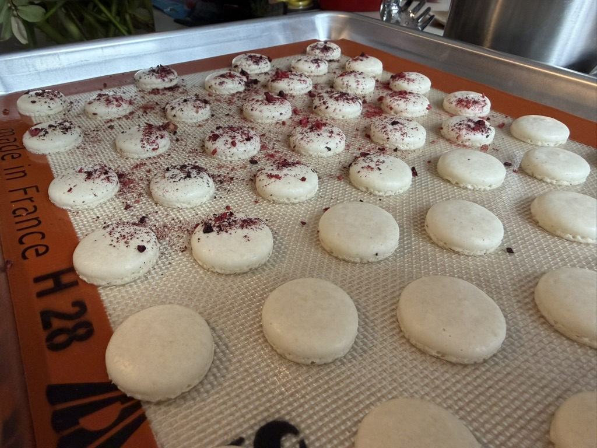

Small-batch, seasonal macarons rooted in care, texture, and place. Made with eggs from our chickens and ingredients we prepare ourselves.
order a micro-batch →
This is not a high-volume bakery.
It’s a slow, evolving kitchen practice — micro-batches, seasonal notes,
and careful ingredients.
More like field notes than a menu.

eggs from our flock
freeze-dried fruit and herbs
small-batch buttercreams
no artificial colors or flavors
1. small batches are released every two weeks
2. claim a box via email or instagram
3. local pickup in martinsville, nj
For now, orders are limited and released in small batches.
If you'd like one, reach out or follow along for the next drop.